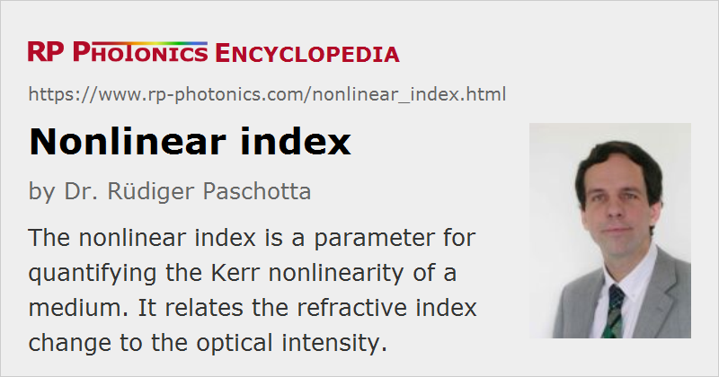

Nonlinear Index
Definition: a parameter for quantifying the Kerr nonlinearity of a medium
German: nichtlinearer Brechungsindex
Formula symbol: n2
Units: m2/W
How to cite the article; suggest additional literature
Author: Dr. Rüdiger Paschotta
When light with high intensity propagates through a medium, this causes nonlinear effects. The simplest of these is the Kerr effect, which can be described as a change (usually an increase) in the refractive index in proportion to the optical intensity I
with the nonlinear refractive index n2. The units of that quantity are m2/W (or cm2/W) in the SI system, but in older literature one finds n2 values in esu units. For the conversion of such units, the equation
can be used, where n is the refractive index.
Normally, nonlinear indices are measured for linearly polarized light. For circularly polarized light in a not birefringent medium, the Kerr effect is weaker by one third.
At very high optical intensities, the equation above for the nonlinear index change may need a higher-order correction. For example, one may have a term proportional to the index squared, with a negative coefficient, so that the Kerr effect saturates.
In addition to the Kerr effect (a purely electronic nonlinearity), electrostriction can significantly contribute to the value of the nonlinear index [6, 7]. Here, the electric field of light causes density variations (acoustic waves) which themselves influence the refractive index via the photoelastic effect. That mechanism, however, involves a significant time delay and is thus relevant only for relatively slow power modulations, but not for ultrashort pulses. In optical fibers, the contribution of electrostriction at low (megahertz) frequencies is typically of the order of 10–20% of that of the Kerr effect, but can strongly depend on the material.
For transparent crystals and glasses, n2 is typically of the order of 10−16 cm2/W to 10−14 cm2/W. Silica, as used e.g. in silica fibers, has a particularly low nonlinear index of 2.7 · 10−16 cm2/W for wavelengths around 1.5 μm, whereas some chalcogenide glasses exhibit several hundred times higher values. Semiconductor materials also have very high nonlinear index values. It has been shown that the nonlinear index scales in proportion to the inverse fourth power of the band gap energy, but also depends on the proximity of the test wavelength to the bandgap [4]. The nonlinearity can also be negative (self-defocusing nonlinearity), particularly for photon energies above ≈ 70% of the bandgap energy.
| Material | nonlinear index | Reference |
|---|---|---|
| air | 1.22 · 10−22 m2/W at 308 nm, 1 atm | [2] |
| fused silica | 2.19 · 10−20 m2/W at 1030 nm | [11] |
| sapphire | 2.8 · 10−20 m2/W at 1550 nm | [9] |
| yttrium aluminum garnet (Y3Al5O12) | 6.13 · 10−20 m2/W at 1030 nm | [11] |
| yttrium vanadate (YVO4), no | 15.6 · 10−20 m2/W at 1030 nm | [11] |
| yttrium vanadate (YVO4), ne | 14.9 · 10−20 m2/W at 1030 nm | [11] |
| calcite (CaCO3), no | 3.22 · 10−20 m2/W at 1030 nm | [11] |
| calcite (CaCO3), ne | 2.12 · 10−20 m2/W at 1030 nm | [11] |
| calcium fluoride (CaF2) | 1.71 · 10−20 m2/W at 1030 nm | [11] |
Figure 1: Nonlinear index values for various materials. Note that the values are polarization-dependent in case of birefringent materials.
Materials with a high nonlinear index often have a small bandgap energy, and therefore also often exhibit strong two-photon absorption (TPA). For some applications such as channel conversion in telecom systems, this is detrimental, and a figure of merit such as n2 / β (where β is the TPA coefficient) can be used to compare different materials.
The measurement of the nonlinear index of bulk samples is often done with the z-scan technique, which is based on self-focusing via the Kerr lens.
The nonlinearity of optical fibers can be quantified by measuring spectral broadening resulting from self-phase modulation. Note, however, that the polarization state may be scrambled in a non-polarization-maintaining fiber, and this can affect the result. Also, the result is a kind of average over the material properties of the fiber core and the cladding.
Note that even air exhibits some Kerr nonlinearity, with a nonlinear index around 5 · 10−19 cm2/W for visible light and atmospheric pressure.
Questions and Comments from Users
Here you can submit questions and comments. As far as they get accepted by the author, they will appear above this paragraph together with the author’s answer. The author will decide on acceptance based on certain criteria. Essentially, the issue must be of sufficiently broad interest.
Please do not enter personal data here; we would otherwise delete it soon. (See also our privacy declaration.) If you wish to receive personal feedback or consultancy from the author, please contact him e.g. via e-mail.
By submitting the information, you give your consent to the potential publication of your inputs on our website according to our rules. (If you later retract your consent, we will delete those inputs.) As your inputs are first reviewed by the author, they may be published with some delay.
Bibliography
| [1] | M. J. Weber, D. Milam. and W. L. Smith, “Nonlinear refractive index of glasses and crystals”, Opt. Eng. 17, 463 (1978), doi:10.1117/12.7972266 |
| [2] | Y. Shimoji et al., “Direct measurement of the nonlinear refractive index of air”, J. Opt. Soc. Am. B 6 (11), 1994 (1989), doi:10.1364/JOSAB.6.001994 |
| [3] | M. Sheik-Bahae et al., “Sensitive measurement of optical nonlinearities using a single beam”, IEEE J. Quantum Electron. 26 (4), 760 (1990), doi:10.1109/3.53394 |
| [4] | M. Sheik-Bahae et al., “Dispersion and band-gap scaling of the electronic Kerr effect in solids associated with two-photon absorption”, Phys. Rev. Lett. 65 (1), 96 (1990), doi:10.1103/PhysRevLett.65.96 |
| [5] | K. S. Kim et al., “Measurement of the nonlinear index of silica-core and dispersion-shifted fibers”, Opt. Lett. 19 (4), 257 (1994), doi:10.1364/OL.19.000257 |
| [6] | E. L. Buckland and R. W. Boyd, “Electrostrictive contribution to the intensity-dependent refractive index of optical fibers”, Opt. Lett. 21 (15), 1117 (1996), doi:10.1364/OL.21.001117 |
| [7] | E. L. Buckland and R. W. Boyd, “Measurement of the frequency response of the electrostrictive nonlinearity in optical fibers”, Opt. Lett. 22 (10), 676 (1997), doi:10.1364/OL.22.000676 |
| [8] | I. P. Nikolakakos et al., “Broadband characterization of the nonlinear optical properties of common reference materials”, IEEE Sel. Top. Quantum Electron. 10 (5), 1164 (2004), doi:10.1109/JSTQE.2004.836007 |
| [9] | A. Major et al., “Dispersion of the nonlinear refractive index in sapphire”, Opt. Lett. 29 (6), 602 (2004), doi:10.1364/OL.29.000602 |
| [10] | I. Dancus et al., “Single shot interferometric method for measuring the nonlinear refractive index”, Opt. Express 21 (25), 31303 (2013), doi:10.1364/OE.21.031303 |
| [11] | P. Kabacinski et al., “Nonlinear refractive index measurement by SPM-induced phase regression”, Opt. Express 27 (8), 11018 (2019), doi:10.1364/OE.27.011018 |
See also: Kerr effect, self-phase modulation, Kerr lens, refractive index, B integral, nonlinearities, z-scan measurements
and other articles in the category nonlinear optics
|  |
If you like this page, please share the link with your friends and colleagues, e.g. via social media: 


These sharing buttons are implemented in a privacy-friendly way! |
2020-07-04
What is the nonlinear refractive index of chalcogenide glass?
Answer from the author:
There are plenty of different chalcogenide glasses, which also differ substantially in terms of their nonlinear index. Generally, it is substantially higher than for silica glass.